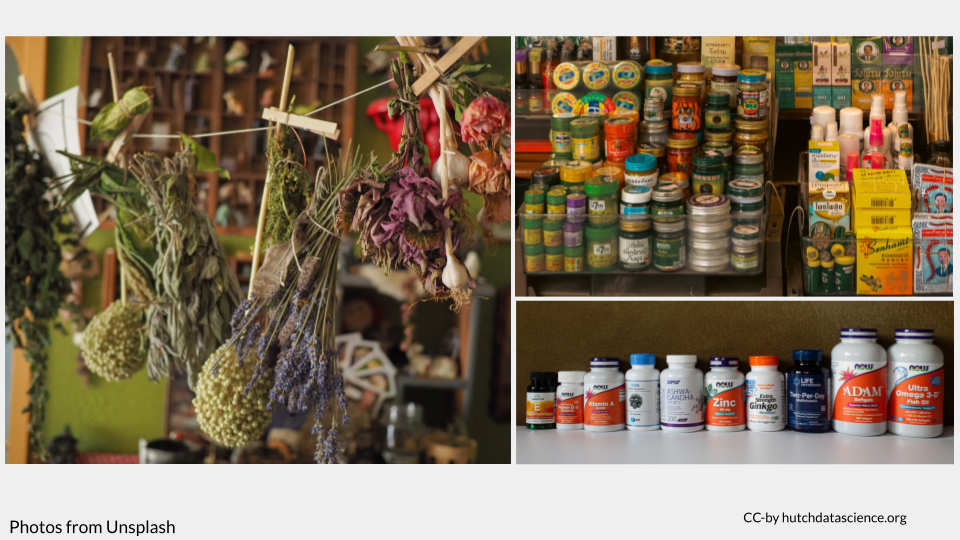
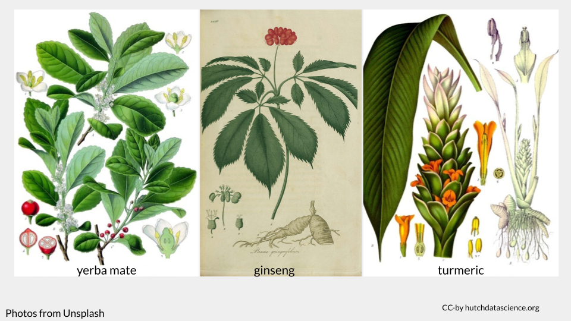
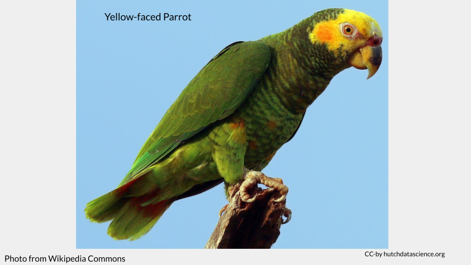
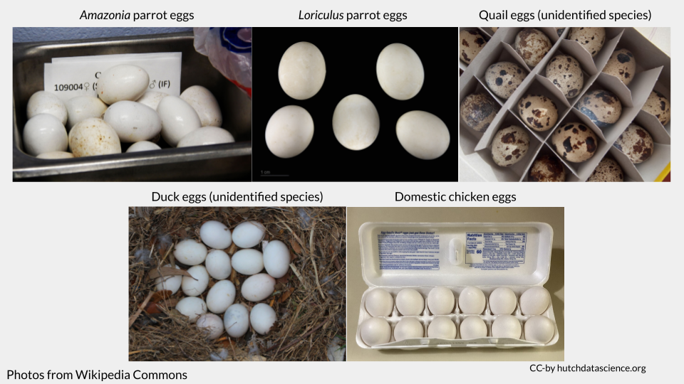
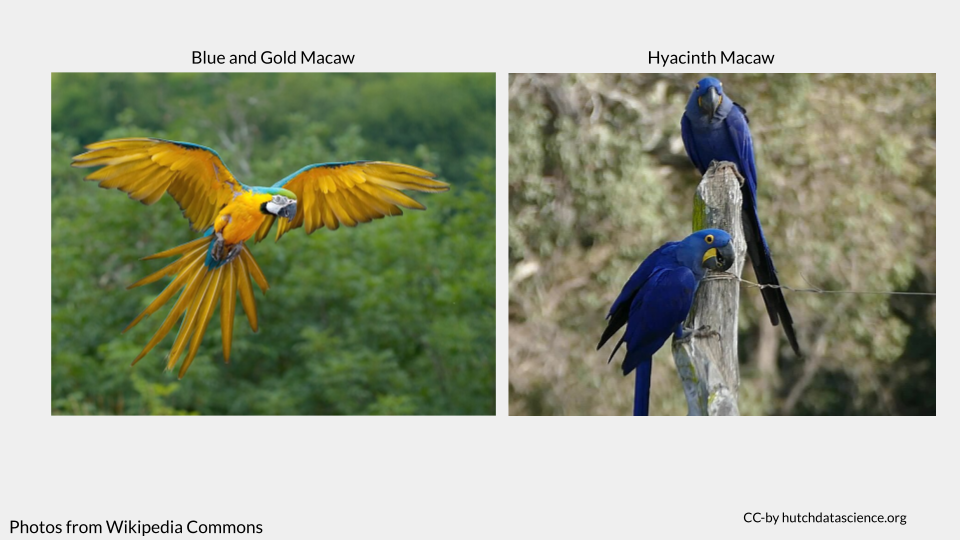

DNA Forensics Prework
This activity explores forensic uses of DNA barcoding and DNA reference datasets. You will work with data based on real forensic investigations in order to identify the species of a sample based on a small fragment of DNA.
What is DNA barcoding?
DNA barcoding is a technique that involves sequencing a small piece of DNA in order to determine an organism’s species identity. The DNA barcode is a short (400-800 bp in length) section of the genome that is highly variable and can be used to reliably distinguish one species from another. Although the gold standard for species identification is typically based on an individual’s appearance, or morphology, this method isn’t always possible in forensic investigations. For example, an investigator may be asked to identify only a small part of an organism, or be given a sample of plant matter that has been partly digested. DNA barcoding can provide identity when morphology fails.
However, DNA barcoding is only as accurate as the reference database you use. Sometimes a sample cannot be identified because the reference database doesn’t happen to include a known representative of that species. In these instances, a sample may be identified to a genus, or matched to the closely related species that is represented in the reference database.
What makes a good DNA barcoding region?
Not all genomes regions are useful for barcoding. A good DNA barcoding region need to have enough variation among species so that the species are distinguishable, but it also needs to have very low variation among members of the same species (so that a single reference barcode can match fairly closely to all individuals within a species). Additionally, the barcoding region has to have highly-conserved flanking regions (that is, regions next to the barcode with very little variation) so that researchers can use a common set of PCR primers to analyze a wide variety of species.
Unfortunately, no single barcoding region exists that can be used universally across all biological life. Thus, researchers use different barcoding regions for animals, plants, fungi, or bacteria. Researchers may also use a variety of barcoding regions within these groups to answer particular questions or to deal with varying sample quality.
Tip
You may have heard of a technique called DNA fingerprinting. While similar to DNA barcoding, there are several important differences between the two techniques.
Region of DNA: The DNA barcoding technique amplifies a single, highly variable region of DNA that is 400-800 base pairs long. DNA fingerprinting, on the other hand, amplifies multiple DNA regions called variable number tandem repeats, or VNTRs. These regions are 10-100 base pairs in length. There are many VNTR regions scattered throughout the genome. It is common to examine at least 13 different VNTR regions in a DNA fingerprinting analysis.
Level of identification: DNA barcoding is used to identify the species of a sample, while DNA fingerprinting identifies an individual organism. The larger number of shorter variable DNA regions allows researchers to be more precise when determining the individual a sample comes from.
Case File: Herbal Medicine Investigation
In the United States, pharmaceuticals are regulated by the FDA under the authority of the Federal Food, Drug, and Cosmetic Act (FFDC). This law gives the US government the authority to oversee the safety of food, pharmaceuticals, medical devices, and cosmetics. In particular, the FFDC requires that food, pharmaceuticals, medical devices, and cosmetics be clearly and accurately labeled with their ingredients. However, herbal supplements and herbal medicinal products are not regulated in the same way as pharmaceuticals. These products are considered dietary supplements, which are regulated under the Dietary Supplement Health and Education Act. Products that fall under the purview of the Dietary Supplement Health and Education Act have much looser regulations around labeling, testing, and effectiveness. Although companies are required to verify that their dietary supplements are safe and accurately labeled, the FDA generally relies on an honor system.
New York Investigation into herbal medicine
In 2015, the New York Attorney General temporarily halted the sale of store-brand herbal supplements from GNC, Target, Walgreens, and Walmart after an investigation revealed many of these supplements did not contain any quantity of the herbs on their labels. This investigation was prompted by a 2013 New York Times article entitled “Herbal Supplements Are Not What They Seem” and reviewed research by a group of Canadian scientists that used DNA barcoding to examine whether the ingredients on the labels of herbal supplements matched the ingredients inside the capsules. The NY AG and the companies reached an agreement to resume sales, with the companies promising to implement reforms and prominently announce in stores and on its website if a supplement product was derived from whole herbs or extracts.

In 2018, inspired by these events and other research suggesting ingredient mismatch was still common, two researchers and three high schoolers from the Urban Barcode Research Program published a study examining whether herbal medicinal products bought online contained what their labels said they contained. The Urban Barcode Research Program is a science education initiative based in New York City that connects high school students with researchers to do biodiversity studies in the city. These students were particularly interested in this research question because they belonged to communities where herbal supplements and herbal medicine were commonly used.
This study is an example of pharmacovigilance.
How much money is there in herbal medicine?
In 2025, the US herbal medicine market earned $36.1 billion in profit and it continues to grow. However, international regulatory changes of how plants may be used, sold, or imported can have implications for the availability of different ingredients. Some ingredients may become more expensive or difficult to procure, especially if supply chains are long or complicated. It is estimated that material costs may be cut by as much as 20% when a manufacturer swaps more easily-obtained ingredients for rare ones, or at least 80% if expensive plant powders are cut or replaced entirely with fillers like rice powder or common weeds,
Keep in mind that these swaps may happen at any point along the supply chain! These changes may be as simple as swapping the leaf of a plant for the more expensive root (as can happen with ashwagandha), or could be as complex as swapping turmeric powder with dyed rice powder.
Case File: Suspected Parrot Smuggling

In Brazil, wildlife is considered the property of the Brazilian State and the commercial trade of wild animals is strictly controlled (Wildlife Protection Law; law no. 5197/1967). Anyone who catches, transports, keeps captive, or sells wild animals without proper authorization can face fines and up to 6-12 months of prison time. These penalties increase if the wild animal is endangered or belongs to a migratory species, among other things (Environmental Crimes Law; law no. 9605/1998).
Brazilian parrot smuggling investigation
In their 2015 paper “DNA Barcoding Identifies Illegal Parrot Trade”, Gonçalves et al. detail a forensic investigation of a potential animal smuggling incident at an airport in Brazil. This is their brief overview of the case:
Here we report a case from 2003 of a man who was arrested at Recife International Airport in Brazil carrying 58 unhatched avian eggs and intending to fly to Europe. The eggs were packed around his abdomen to keep them alive during the trip. The police were already investigating him, and during this trip to Brazil he visited various states where he could have acquired the eggs. When arrested, he claimed that they were quail eggs, but their external morphology did not support his claim. The embryos never hatched; thus, it was not possible to identify them based on their morphology. However, the external morphology of the eggs and embryos suggested that they were from parrots.
Many bird eggs look alike and can’t easily be identified to genus level, let alone species level. Additionally, 30% of parrot species are endangered. It is important to know the parrot species in order to properly charge this man under Brazilian law (if these eggs are parrot eggs, as authorities suspect).

How much money is there in parrot egg smuggling?
Among parrot enthusiasts, there is a high demand for many of the rarer or protected parrot species. The only birds that are legally allowed to be sold are ones that have been born in captivity. Popular and common species, like the Blue and Gold Macaw (Ara ararauna), can fetch between $1,200 and $3,000 on the market. Rare or “high-end” species, like the Hyacinth Macaw (Anodorhynchus hyacinthinus), are worth up to $20,000 a bird.

Although many people do legally breed captive birds for sale and trade, the demand often outweighs the supply. One way for smugglers to fill this gap is to poach fertilized eggs from nest and smuggle them into aviaries in other countries, where the eggs hatch into birds that are tagged as “captive-born”. In one case in Switzerland, investigators found seven live parrots that had been hatched from smuggled eggs. They estimated the seven birds were collectively worth more than $100,000.
You can read more about egg smuggling here and here.
NoteCheck Your Knowledge
Why is DNA barcoding useful for the herbal medicine investigation case study?
What are some potential negative consequences of taking an herbal medication that is mislabeled?
Why is DNA barcoding useful for the suspected parrot smuggling case study?
What are some potential negative consequences of smuggling wildlife out of Brazil?